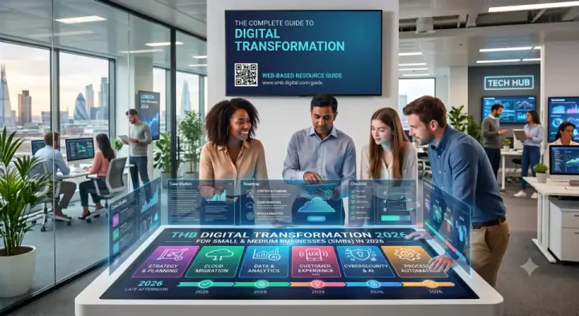
Visibility Across the Stack
Monitoring, analytics, and security decisions work best when teams can actually see what is happening across systems.
We combine proven open-source platforms with selected commercial technologies to build environments that are secure, maintainable, and cost-aware. The goal is not more tools — it is the right ones for your business, team, and growth stage.
Lower recurring spend, clearer architecture, and stronger alignment between reliability, performance, and business risk.
A practical view of the technologies we can recommend, implement, and support. Some environments benefit most from open-source platforms, others from a hybrid model with selected enterprise tooling. We help you choose intentionally.

Monitoring, analytics, and security decisions work best when teams can actually see what is happening across systems.
From collaboration platforms to hybrid security models, the stack should grow with the business without becoming harder to manage.
These examples show the kinds of environments we can design, secure, and improve across branches, cloud productivity, and operational visibility.
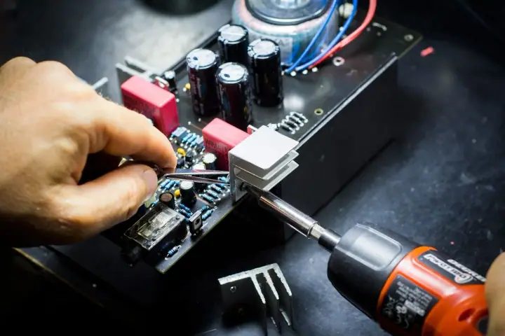
Structured branch connectivity, segmentation, VPN planning, and firewall-aware network design for growing environments.
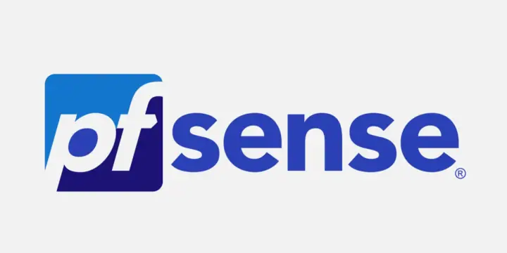
Firewall policy visibility, security posture reviews, and operational dashboards that help teams respond with confidence.
Cloud productivity, email, identity, and collaboration environments that align with user expectations and support models.
Monitoring, alerting, and response workflows designed to improve visibility without adding unnecessary complexity.
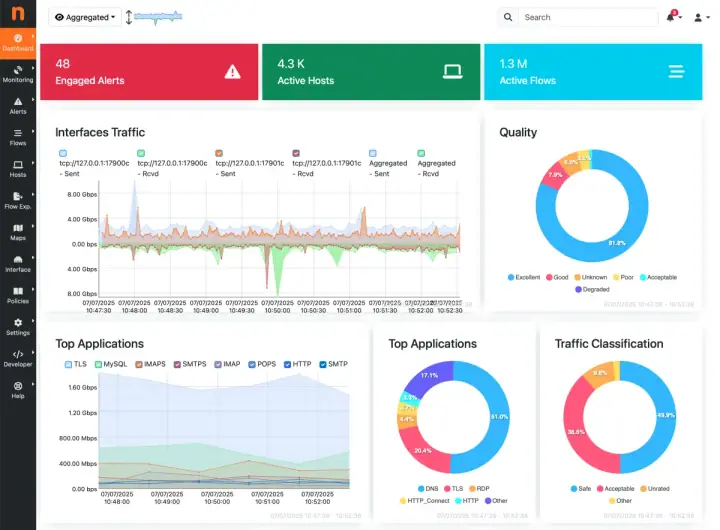
Live visibility into top talkers, protocols, flows, and bandwidth trends so teams can troubleshoot branch and internet performance faster.
Read the ntopng guide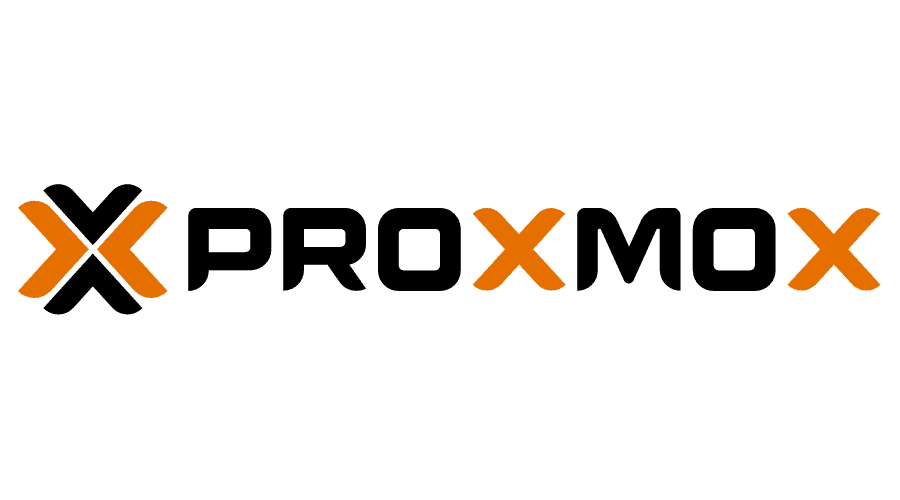
Enterprise virtualization for businesses replacing VMware-heavy cost with a more efficient private infrastructure stack.
Significantly less than VMware licensing (estimate)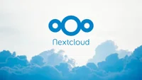
Self-hosted file sync, sharing, and collaboration for organizations that want stronger control over data and access.
No license fees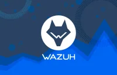
Security monitoring and SIEM visibility without the cost profile of large commercial analytics platforms.
Free SIEM AlternativeFirewall and connectivity security for branches, remote access, segmentation, and dependable perimeter protection.
No License Fees
Infrastructure monitoring and alerting for uptime-sensitive systems that need better operational visibility.
No license fees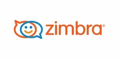
Email and collaboration for teams seeking a more cost-controlled alternative to Exchange-heavy deployments.
Lower cost than Exchange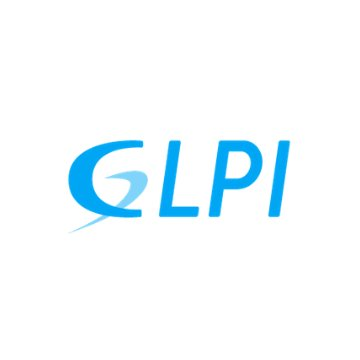
Helpdesk and ITSM tooling that improves ticket flow, asset visibility, and service process control.
Free ITSM Solution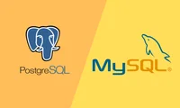
Production-ready databases for applications, reporting, and business systems that need performance and flexibility.
No license fees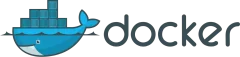
Container platforms for modern applications, internal tools, and environments that benefit from portability and scale.
Free Container Runtime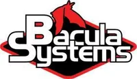
Backup and recovery tooling aligned to resilience goals, retention needs, and the 3-2-1 backup rule.
Community Edition AvailableMetrics, analytics, and dashboards for teams that need a clearer view of health, performance, and trends.
Open Source Analytics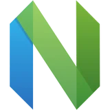
Document collaboration for teams that want office-suite capability integrated into a self-hosted ecosystem.
No Per-User FeesVideo conferencing for organizations that prefer privacy, control, and lower ongoing communication costs.
Unlimited MeetingsTeam chat and collaboration for internal messaging environments that need control and integration flexibility.
No Subscription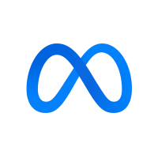
Messaging, file sharing, and collaboration in a self-managed environment where data ownership matters.
Full Data Control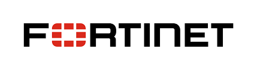
Next-generation firewalls and SD-WAN for businesses that need dependable perimeter and branch security.
Endpoint security and firewall solutions for teams balancing protection, usability, and administrative simplicity.
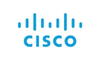
Networking and security platforms across switching, wireless, branch connectivity, and cloud-managed operations.
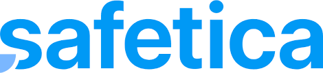
Data loss prevention for organizations that need stronger control over sensitive information and user activity.
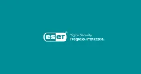
Lightweight endpoint protection for businesses that want effective security without heavy operational drag.
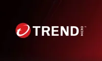
Cloud and endpoint security tooling suited to environments with stronger enterprise control requirements.
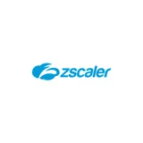
Cloud security and secure access service edge tooling for modern distributed work environments.
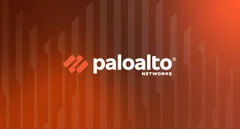
Firewall and cloud security platforms for businesses with advanced policy, inspection, and segmentation needs.
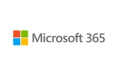
Productivity, identity, and collaboration services when commercial cloud alignment is the right fit for the business.
Enterprise security tooling including QRadar and Guardium for larger monitoring and governance needs.
The right stack is rarely the one with the most features. It is the one that matches the business operating model, the internal support capacity, the required uptime, the security expectations, and the budget available for ongoing ownership. That is why we compare tools by fit, not by trend.
Not always. Many businesses get the best result from a hybrid model that uses open-source where it adds value and commercial tooling where support, compliance, or user expectations matter more.
Yes. Good architecture makes it easier to start with one model and evolve toward a broader platform strategy as the business grows.